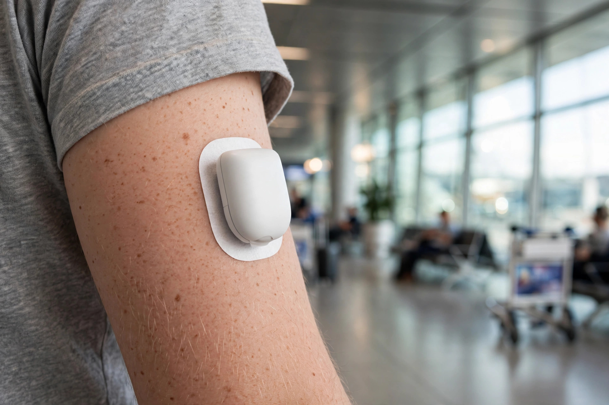

Flying with Omnipod 5: Airport Security & Travel Guide (2026)
Everything Omnipod 5 users need to know before flying in 2026, TSA security rules, which scanners are safe, flight mode settings, cabin pressure effects, and exactly how many pods to pack.

The Omnipod 5 is one of the most travel-friendly insulin pumps available, tubeless, waterproof, and compact. But flying with it still raises real questions: Can it go through the body scanner? Does it need to be in airplane mode? What happens at altitude? How many pods should you pack?
This guide answers every one of those questions using Insulet's own published guidance and TSA policy, so you arrive at the airport knowing exactly what to expect. If you are new to flying with diabetes altogether, my broader guide to flying with type 1 diabetes walks through the whole airport experience step by step.
Our free calculator works out your exact pod count based on your trip length, with a safety buffer built in.
Build my Omnipod packing list →Omnipod 5 at Airport Security: The Complete Breakdown
The Omnipod 5 system consists of two components you'll be traveling with: the Pod (worn on your body) and the Controller (handheld device). Each behaves differently at security checkpoints.
The Pod (Worn on Body)
According to Insulet, the Omnipod 5 Pod can tolerate the common electromagnetic and electrostatic fields found in airport security equipment. You can wear the Pod through a walk-through metal detector.
For AIT (Advanced Imaging Technology) full body scanners, the situation is more nuanced. The Omnipod 5 communicates with a compatible CGM (Dexcom G6, Dexcom G7, or FreeStyle Libre 2 Plus), and Insulet notes that neither the system nor the CGM sensors have been fully tested in all body scanner environments. Insulet recommends requesting alternative screening, hand-held wand, walk-through metal detector, or pat-down, when wearing the Omnipod 5.
My own experience: I fly with the Omnipod 5 and I have never opted out of the body scanner. I have never noticed any device problems afterward. That is my personal experience, not a recommendation. Insulet's guidance above is the official line, and it is the one to follow if you want to play it safe.
The Controller (Handheld Device)
The Omnipod 5 Controller goes in the tray with your other electronics and passes through the X-ray belt with your carry-on bag. According to Insulet, the Controller can safely pass through airport X-ray machines. You do not need to request hand inspection for the Controller.
Extra Pods in Your Carry-On
Spare pods in your bag go through the X-ray with your other belongings, this is fine. Keep them in their original packaging for easy identification by security officers if questioned. I sometimes keep one Omnipod box in its original packaging in my carry-on, just so it is easy to show if someone asks. Not required, just a habit.
Quick Security Reference
| Item | Metal detector | Body scanner (AIT) | Baggage X-ray |
|---|---|---|---|
| Pod (worn on body) | ✓ Safe | Request pat-down instead | N/A, worn on body |
| Controller | ✓ Safe | ✓ Safe | ✓ Safe, goes through in tray |
| Spare pods (in bag) | N/A | N/A | ✓ Safe, goes through in bag |
| Insulin | N/A | N/A | ✓ Declare separately |
Flight Mode: What to Do Before and During the Flight
Set Your Controller to Airplane Mode
Before boarding, switch your Omnipod 5 Controller to airplane mode. This disables Wi-Fi but, critically, keeps Bluetooth enabled. The Omnipod 5 communicates with your Pod and CGM via Bluetooth, so the system continues working normally in airplane mode. You will not lose CGM readings or pod communication.
To access airplane mode on the Omnipod 5 Controller, go to your device settings the same way you would on any smartphone. Verify Bluetooth remains on after enabling airplane mode.
Check Your Airline's Policy
Before flying, confirm your airline's policy on Bluetooth medical devices. Most major airlines permit Bluetooth medical devices throughout the flight, but policies vary. Contact the airline in advance if you're unsure. If Bluetooth must be completely disabled at any point, use your backup blood glucose meter for treatment decisions during that window.
Using Your CGM App on the Phone
If you use your smartphone as the Omnipod 5 controller rather than the dedicated Controller device, put your phone in airplane mode and then manually re-enable Bluetooth. The Omnipod 5 app continues functioning with Bluetooth on in airplane mode.
Cabin Pressure and Altitude: What Omnipod 5 Users Need to Know
This is something most travel guides skip, but it's clinically important. Insulet's own safety documentation states:
Do not use the Omnipod 5 System at atmospheric pressures below 700hPA. Normal airplane cabin pressure stays above this threshold, so standard commercial flights are fine. However, cabin pressure does change during takeoff and landing.
The concern: tiny air bubbles inside the Pod can expand due to pressure changes, causing unintended insulin delivery. This can result in hypoglycemia, particularly during ascent and descent.
What to do:
- Check your glucose before takeoff and before landing
- Have fast-acting glucose (tablets, juice) accessible at your seat, not in the overhead bin
- Follow your endocrinologist's specific guidance on managing glucose during flights
- If you experience unexplained lows during or after flights, discuss temporary basal adjustments with your care team
Time Zones: Updating Your Omnipod 5 Controller
This is one of the most important and most overlooked parts of traveling with the Omnipod 5. Insulet's guidance is explicit:
Always update the time zone on your Controller when you travel. If you do not update the time zone, insulin therapy will be delivered based on your old time zone. This disrupts your basal schedule and creates inaccurate history logs, which affects how the Omnipod 5's automated mode makes decisions.
For the Omnipod 5 specifically, the Smart Bolus Calculator relies on accurate insulin delivery history. An incorrect time zone corrupts this data. The system will notify you if it detects a time zone change, respond to this notification promptly when it appears.
How Many Pods to Pack
Each Omnipod 5 pod lasts up to 72 hours, 3 days. The standard travel calculation:
| Trip length | Pods needed | Pods to pack (with buffer) |
|---|---|---|
| 3 days | 1 pod | 3 pods |
| 7 days | 3 pods | 5 pods |
| 10 days | 4 pods | 6–7 pods |
| 14 days | 5 pods | 8–9 pods |
Why so many extras? Pod failures are real. Heat, humidity, water, adhesion problems, and accidental dislodgement all happen more during travel than at home. A pod failure mid-trip means switching to injections unless you have a spare. Running out of pods in a country where Omnipod supply is limited or unavailable is a genuine problem, always pack more than you think you need.
Insulet's own guidance: "Pack at least twice the supplies you expect to use."
All of this counts as medical supplies, and TSA allows an extra carry-on bag for medical items on top of your normal allowance. I have never used a separate medical-only bag myself, everything fits in my regular carry-on, but the option is there if you need it.
Keeping Pods and Insulin at the Right Temperature
Pods themselves are less temperature-sensitive than insulin, but the insulin inside your pump reservoir absolutely is. Standard insulin temperature rules apply:
- Keep insulin below 77–86°F (brand-dependent) during travel
- Never put insulin in checked luggage, cargo holds can freeze
- A FRIO cooling wallet or insulated case with a gel pack works well for travel
- Spare pods in your bag don't require refrigeration but keep them away from direct heat and sunlight
If you're traveling to a hot climate, adhesion becomes a bigger issue. Skin Tac adhesive wipes applied before pod placement dramatically improve adhesion in heat, humidity, and water. Many Omnipod users consider these non-negotiable for travel to beach or tropical destinations.
Worth packing
- BELTRON protective case for the Omnipod 5 controller, a slim shockproof case so the controller survives being tossed in a carry-on
- FRIO insulin cooling wallet, keeps backup insulin at a safe temperature for 45+ hours, no ice, no fridge
- ROAD iD medical ID bracelet, if you're ever separated from your devices, first responders know you have diabetes
As an Amazon Associate, I earn from qualifying purchases.
Public Wi-Fi Warning
Insulet's official safety guidance includes a specific caution: avoid connecting your Omnipod 5 Controller or smartphone to public Wi-Fi networks, including those at airports and hotels. Public networks are unsecured and could expose your device to malware. Use your phone's cellular data or a personal hotspot instead when internet access is needed.
Omnipod 5 Travel Checklist
- ☐ Pack 2x the pods you expect to need (minimum 4–5 for a 7-day trip)
- ☐ Pack backup insulin for injections in case of pod failure
- ☐ Keep all insulin in carry-on, never checked luggage
- ☐ Know your security approach: metal detector or pat-down (not body scanner)
- ☐ Prepare what to say: "I'm wearing an Omnipod 5 insulin pump, I'd like a metal detector or pat-down please"
- ☐ Set Controller to airplane mode before boarding (Bluetooth stays on)
- ☐ Verify Bluetooth is on after enabling airplane mode
- ☐ Update time zone on Controller at destination, my time zone planner walks through the timing shift
- ☐ Check glucose before takeoff and before landing (cabin pressure changes)
- ☐ Have fast-acting glucose accessible at your seat
- ☐ Avoid public Wi-Fi on your Controller and Omnipod app phone
- ☐ Pack Skin Tac wipes for hot/humid destinations
- ☐ Optional: a doctor's travel letter listing your pump and insulin. Honestly, I have never been asked for one at security, so I travel without one, but it costs nothing to bring if it gives you peace of mind.
- ☐ Download Insulet's "Notice of Medical Device" letter (available at omnipod.com) for international travel
Get your exact pod and supply count for your trip length, with a safety buffer built in.
Build my Omnipod packing list →Once you are through security, the travel-specific side of the Omnipod is the next thing to learn. My Omnipod pod-failure backup plan covers what to do when a pod fails mid-trip (it happened to me at 15, in the Roman Forum), and the Omnipod 5 + Dexcom G7 travel guide covers phone vs Controller, change timing around trips, and Bluetooth on the road.
Frequently Asked Questions
Can Omnipod 5 go through airport security?
Yes. The Omnipod 5 Pod and Controller can pass through airport security. The Controller goes through the X-ray in the tray with your electronics. For the Pod worn on your body, Insulet recommends requesting a walk-through metal detector or pat-down rather than the AIT full body scanner, as the system has not been fully tested in all body scanner environments. You have the right to request this, TSA cannot refuse.
Does Omnipod 5 set off metal detectors?
Most Omnipod 5 users report that the Pod does not set off metal detectors. However, you may be selected for additional screening regardless. Notifying the officer before screening that you are wearing an insulin pump prepares them and speeds up the process.
Do I need to put Omnipod 5 in flight mode?
Yes. Set your Controller to airplane mode before your flight. Bluetooth stays enabled in airplane mode, so your Pod and CGM continue communicating normally. Only Wi-Fi is disabled.
Can Omnipod 5 be used during a flight?
Yes. The Omnipod 5 is safe to use at the atmospheric pressures found in commercial airplane cabins. Be aware that pressure changes during takeoff and landing can cause tiny air bubbles to expand inside the pod, potentially causing unintended insulin delivery. Check glucose before takeoff and before landing and have fast-acting glucose accessible at your seat.
How many Omnipod 5 pods should I pack for a week-long trip?
Each pod lasts up to 3 days, so a 7-day trip needs 3 pods minimum. Pack 4–5 pods as your travel supply. Pod failures are more common during travel due to heat, water, and physical activity. Running out of pods mid-trip is a real risk, always pack extras.
What is the difference between Omnipod 5 and Omnipod DASH at airport security?
The Omnipod DASH (older model) can safely pass through X-ray machines, AIT body scanners, and metal detectors, Insulet confirms this. The Omnipod 5 is different because it connects to a CGM, and Insulet recommends requesting alternative screening (metal detector or pat-down) instead of the body scanner for the Omnipod 5 system.